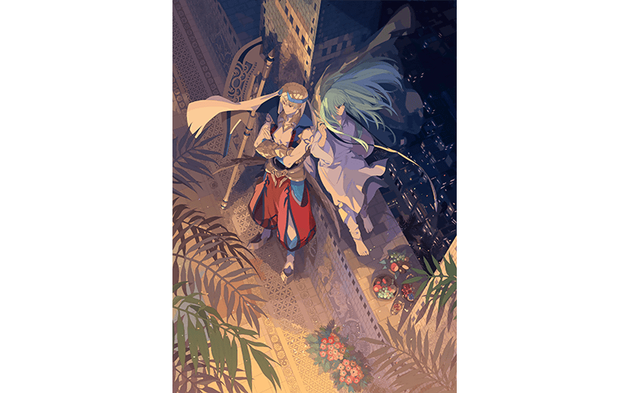
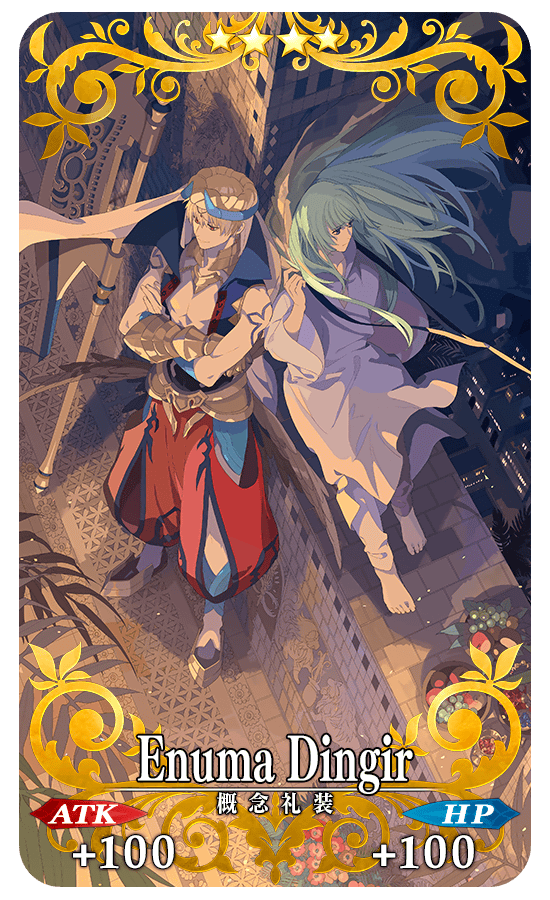
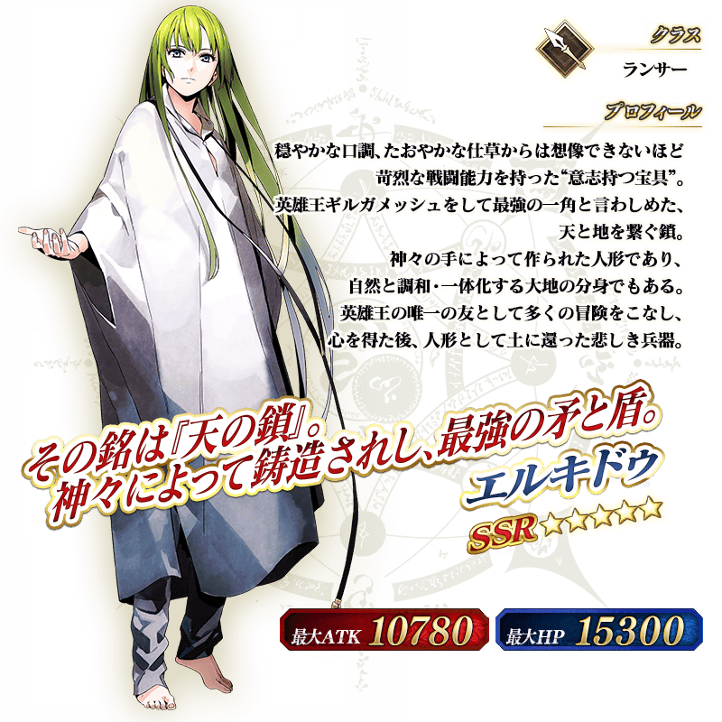

為了記念舞台劇「Fate/Grand Order THE STAGE -絕對魔獸戰線巴比倫尼亞-」的公演，舉辦「Fate/Grand Order THE STAGE -絕對魔獸戰線巴比倫尼亞-」公演記念宣傳活動！
◆舉辦期間◆
2019年1月10日(四) 17:00～1月24日(四) 11:59

「Fate/Grand Order THE STAGE -絕對魔獸戰線巴比倫尼亞-」
■大阪公演
公演日:2019年1月11日(五)～1月14日(一)
劇場:サンケイホールブリーゼ
■東京公演
公演日:2019年1月19日(六)～1月27日(日)
劇場:日本青年館ホール
官方網站:https://stage.fate-go.jp/
官方推特:@fgothestage
為了記念舞台劇「Fate/Grand Order THE STAGE -絕對魔獸戰線巴比倫尼亞-」的公演，實施公演記念特別登入獎勵。
在下述期間中，登入7次(1天算1次)的話，贈送最多期間限定概念禮裝「★4(SR)Enuma Dingir」與叡智的猛火ALL★4(SR)21張！
◆舉辦期間◆
2019年1月11日(五) AM3:00～1月18日(五) AM2:59
◆贈送對象◆
2019年1月17日(四) AM2:59前通過「特異點F 炎上汙染都市 冬木」的Master對象
| 登入次數 | 贈送內容 |
|---|---|
| 第1次 | ★4(SR)Enuma Dingir 1張 叡智的猛火ALL★4(SR) 3張 |
| 第2次 | 叡智的猛火ALL★4(SR) 3張 |
| 第3次 | 叡智的猛火ALL★4(SR) 3張 |
| 第4次 | 叡智的猛火ALL★4(SR) 3張 |
| 第5次 | 叡智的猛火ALL★4(SR) 3張 |
| 第6次 | 叡智的猛火ALL★4(SR) 3張 |
| 第7次 | 叡智的猛火ALL★4(SR) 3張 |
※登入獎勵會在每天AM3:00配發。 ※最多能領取7次，但根據成為贈送對象的時間點，可能無法到此上限。 ※上述時間前，在管理室(ターミナル)畫面的關卡橫幅必須要有「CLEAR」的文字顯示。
◆期間限定概念禮裝◆
|  |
★★★★SR |
現在永久舉辦的AP消耗量1/2狀態，再追加AP消耗量1/2，主線關卡第1部(從特異點F到第七特異點)的AP消耗量以期間限定變成1/4！
尚未通過至主線關卡第1部的Master，無論如何請藉此機會通過至「第七特異點 絕對魔獸戰線 巴比倫尼亞」！
◆舉辦期間◆
2019年1月12日(六) 12:00～1月24日(四) 11:59
※2019年1月12日(六) 11:59前由於「Fate Project 大晦日 TV特別 2018」放送倒數宣傳活動，第1部＆第2部所有主線關卡的AP消耗量變成1/4。 ＞＞詳情請確認此處的公告。
◆對象關卡◆
主線關卡第1部(從特異點F到第七特異點)
※請注意第1部的自由關卡為對象外。 ※在戰鬥中撤退的情況AP的消耗也是1/4。
今後，也預定在期間限定活動和期間限定宣傳活動中，會有將通過主線關卡設為開放條件的情況。。
如果活用本宣傳活動推進主線關卡的攻略會有所幫助。
主線關卡第1部「第七特異點 絕對魔獸戰線 巴比倫尼亞」初次通過自由關卡前的AP消耗量以期間限定變成1/2！
於主線關卡第1部 第七特異點還殘有尚未通過自由關卡的Master，無論如何請藉此機會通過！
◆舉辦期間◆
2019年1月10日(四) 17:00～1月24日(四) 11:59
◆對象關卡◆
主線關卡第1部「第七特異點 絕對魔獸戰線 巴比倫尼亞」的自由關卡
※初次通過是指入手初次通過報酬的時間點前。 ※在戰鬥中撤退的情況，若是關卡通過前AP的消耗也是1/2。
下述的期間中，有關「Fate/Grand Order THE STAGE -絕對魔獸戰線巴比倫尼亞-」的一部份Servant做為對象，在進行Servant的強化時，大成功(經驗值2倍加成)・極大成功(經驗值3倍加成)的發生率以期間限定變成2倍！
無論如何請藉此機會強化有關「Fate/Grand Order THE STAGE -絕對魔獸戰線巴比倫尼亞-」的10位Servant！
◆舉辦期間◆
2019年1月10日(四) 17:00～1月24日(四) 11:59
◆對象Servant◆
| 職階 | 稀有度 | Servant名 |
|---|---|---|
| Archer | ★★★★★ | 伊絲塔 |
| Lancer | ★★★★★ | 恩奇杜 |
| ★★★★★ | 艾蕾修卡 | |
| ★★★★ | 美杜莎 | |
| Rider | ★★★★★ | 魁札爾・科亞特爾 |
| Caster | ★★★★★ | 梅林 |
| ★★★★★ | 李奧納多・達文西 | |
| ★★★★ | 吉爾伽美什 | |
| Avenger | ★★★★ | 戈爾貢 |
| Shielder | ★★★ | 瑪琇・基利艾拉特 |

下述的期間中，在關卡開始時的支援選擇畫面，選擇其他Master的對象Servant做支援情況、其他Master選擇自己的對象Servant做支援情況的友情點數獲得量變成2倍。
將好友和跟隨的Master等做為支援能選擇Servant和概念禮裝的編成列入考量，藉此機會入手更多友情點數吧！
◆舉辦期間◆
2019年1月10日(四) 17:00～1月24日(四) 11:59
◆對象Servant◆
| 職階 | 稀有度 | Servant名 |
|---|---|---|
| Archer | ★★★★★ | 伊絲塔 |
| Lancer | ★★★★★ | 恩奇杜 |
| ★★★★★ | 艾蕾修卡 | |
| ★★★★ | 美杜莎 | |
| Rider | ★★★★★ | 魁札爾・科亞特爾 |
| Caster | ★★★★★ | 梅林 |
| ★★★★★ | 李奧納多・達文西 | |
| ★★★★ | 吉爾伽美什 | |
| Avenger | ★★★★ | 戈爾貢 |
| Shielder | ★★★ | 瑪琇・基利艾拉特 |
※請注意NPC Servant即使是對象Servant也在友情點數獲得量2倍的對象外。
◆「Fate/Grand Order THE STAGE -絕對魔獸戰線巴比倫尼亞-」公演記念Pick Up召喚期間◆
期間:2019年1月10日(四) 17:00～1月24日(四) 11:59
為了記念舞台劇「Fate/Grand Order THE STAGE -絕對魔獸戰線巴比倫尼亞-」的公演，舉辦期間限定「Fate/Grand Order THE STAGE -絕對魔獸戰線巴比倫尼亞-」公演記念Pick Up召喚！
本次是在舞台劇「Fate/Grand Order THE STAGE -絕對魔獸戰線巴比倫尼亞-」和「第七特異點 絕對魔獸戰線 巴比倫尼亞」活躍的Servant「★5(SSR)恩奇杜」「★4(SR)吉爾伽美什(Caster)」Pick Up！
詳情請在聖晶石召喚畫面左下的召喚詳細確認。
◆有關Servant的注意◆
※恩奇杜、吉爾伽美什(Caster)在Pick Up期間結束後仍會在故事召喚被抽出。
Pick Up期間中，Pick UpServant的出現機率提升！
10次召喚中確定1張★4(SR)以上和確定1位★3(R)以上的Servant！
※確定★4(SR)以上包含Servant和概念禮裝。


※上述「★5(SSR)恩奇杜」的卡面為靈基再臨第2階段。



※上述「★5(SSR)恩奇杜」的立繪為靈基再臨第2階段。
介紹恩奇杜、吉爾伽美什(Caster)的寶具演出！
在「Fate/Grand Order」官方網站內的公告中，公開了「★5(SSR)恩奇杜」「★4(SR)吉爾伽美什(Caster)」的寶具演出。敬請確認。